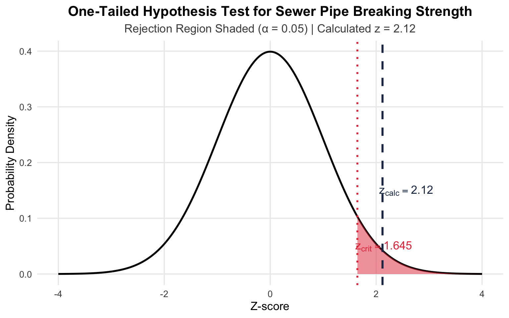

The concept of hypothesis testing
- A statistical hypothesis is a statement about the numerical value of a population parameter.
- The null hypothesis, denoted by \(H_0\), represents the hypothesis that will be accepted unless the data provide convincing evidence that it is false. This usually represents the “status quo” or some claim about the population parameter that the researcher wants to test.
- The alternative hypothesis, denoted by \(H_a\) represents the hypothesis that will be accepted only if the data provide convincing evidence of its truth. This usually represents the values of a population parameter for which the researcher wants to gather evidence to support.
- The test statistic is a sample statistic, computed from information provided in the sample, that the researcher uses to decide between the null and alternative hypothesis.
One tailed vs. two tailed test
One-tailed test
A one-tailed test of hypothesis is one which the alternative hypothesis is directional and includes the symbol “\(\geq\)” or “\(\leq\)”.
Two-tailed test
A two tailed test of hypothesis is one in which the alternative does not specify departure from \(H_0\) in a particular direction and is written with the symbol of equality, i.e. “\(=\)”.
For example,
- One tailed, upper tailed hypothesis \(H_a: \mu > 2400\).
- One tailed, lower tailed hypothesis \(H_a: \mu < 2400\).
- Two tailed hypothesis \(H_a: \mu \neq 2400.\)
Large sample test: \(z\) test
Example: Large sample one tailed test
Suppose building specifications in a certain city require that the average breaking strength of residential sewer pipe be more than 2400 kilograms per meter of length. Each manufacturer who wants to sell pipe in this city must demonstrate that its product meets the specification.
We want to check whether the mean breaking strength of the pipe exceeds 2400 kilograms per meter of length.
The null hypothesis would be,
\[ H_0: \mu \leq 2400 \]
i.e. the pipe does not meet the specifications.
And, the alternative hypothesis would be,
\[ H_1: \mu > 2400 \]
i.e. the pipe meets the specifications.
Convincing evidence in favor of the alternative hypothesis exist when the value of \(\bar{x}\) exceeds 2,400 by an amount that that cannot be attributed to sampling variability. To decide, we compute a test statistic called \(z\), a numerical value computed from the sample. It measures the distance between the value of \(\bar{x}\) and the value of \(\mu\) specified in the null hypothesis. Assume a \(95\%\) level of significance.
We can calculation the test statistic \(z\) like the following,
\[z = \frac{\bar{x}-2400}{\sigma_{\bar{x}}}\]
Note that, a value of \(z=1\) means that the \(\bar{x}\) is \(1\sigma\) above \(\mu=2400\), a value of \(z=1.5\) means \(1.5\sigma\) above the \(\mu=2400\).
In our example,
\[ \alpha = \mathbb{P}(z>1.645)=0.05 \]
when, \(\mu=2400\). The shaded region in the histogram is called the rejection region that refers to the values of the test statistic for which we will reject the null hypothesis, i.e. reject \(H_0\) against \(H_1\).
Suppose we test 50 sections of sewer pipe and find the mean and standard deviation for these 50 measurements to be,
- \(\bar{x}=2400\) kilo per linear meter of length.
- \(s=200\) kilo per linear meter of length.
So, the test statistic will be,
\[ z = \frac{\bar{x}-2400}{\sigma_{\bar{x}}}=\frac{2460-2400}{200/\sqrt{50}}=\frac{60}{28.28}=2.12 \]
Therefore, the sample mean lies \(2.12\sigma_{\bar{x}}\) above the hypothetical value of \(\mu\), 2400. Because this value of \(z\) exceeds 1.645, it falls in the rejection region. That is, we reject the null hypothesis that \(\mu=2400\) and conclude that \(\mu>2400\).
The sample mean lies \(2.12\sigma_{\bar{x}}\) above the hypothesized value of \(\mu\) and because this calculated value exceeds the table value 1.645, it falls in the rejection region. That is, we reject the null hypothesis.
Example: Large sample two tailed test
A manufacturer of cereal wants to test the performance of one of its filling machines. The machine is designed to discharge a mean amount of 12 kilo per box. The manufacturer wants to detect any departure from this setting. This quality study calls for random sampling 100 boxes and determining if the mean fill for the sample is 12 kilo per box.
The hypothesis would be,
- \(H_0: \mu = 12\)
- \(H_1: \mu \neq 12\)
Now assuming, \(\bar{x}=11.851\) and \(s=0.512\), \(\alpha=0.01\), we have,
\[ z = \frac{\bar{x}-\mu}{\sigma_{\bar{x}}}=\frac{11.851-12}{0.512/\sqrt{100}}=\frac{-.149}{.512/10}=-2.91 \]